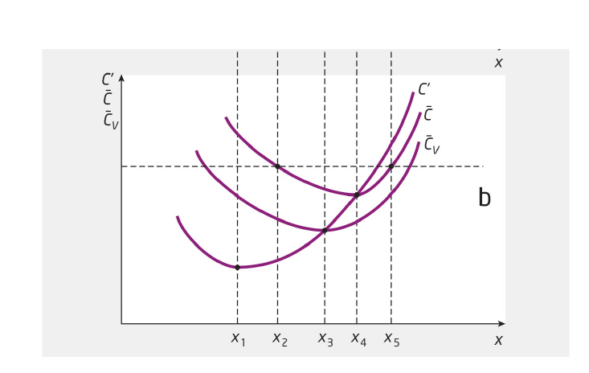

Seminar 3: Produsentteori
Uke xx, ansvarlig xxx
Oppgave 1
- Bedriften Ambå produserer spikerpistoler (x) ved hjelp av arbeidskraft (N) og realkapital (K). Produksjonsprosessen følger denne produktfunksjonen:
\[
x=6N^{0.5}K^{0.5}
\]
Hva er en isokvant? Skisser isokvanten x = 48 i et faktordiagram med arbeidskraft (N) på den horisontale aksen og mengden realkapital (K) på den vertikale.
Løsning:
Isokvant: Viser alle faktorkombinasjoner av arbeidskraft og kapital som gir den samme produksjonsmengden.
Løser produktfunksjonen med hensyn på K:
\[
48 = 6N^{0.5}K^{0.5} \Rightarrow \\
K^{0.5}=(48/6)N^{-0.5} \Rightarrow \\
K = 8^2N^{-1}=\frac{64}{N}
\]
Kan finne f.eks. 4 punkt på isokvanten: En skisse av isokvanten framkommer ved å trekke en linje mellom disse punktene.
Finn et uttrykk for grenseproduktet til de to produksjonsfaktorene N og K. Hva menes med grenseproduktiviteten av arbeidskraft?
Løsning:
Grenseproduktet til produksjonsfaktor N: Viser endringen i produksjonsmengden (x) når
innsatsen av arbeidskraft (N) øker med en enhet, samtidig som innsatsen av den andre
produksjonsfaktoren realkapital (K) holdes uendret.
\[
dx/dN = 0.5\cdot 6 N^{0.5-1}K^{0.5} = 3(\frac{K}{N})^{0.5} > 0
\]
Grenseproduktet til produksjonsfaktor K: Viser endringen i produksjonsmengden (x) når
innsatsen av realkapital (K) øker med en enhet, samtidig som innsatsen av den andre
produksjonsfaktoren arbeidskraft (N) holdes uendret.
\[
dx/dK = 0.5\cdot 6 N^{0.5}K^{0.5-1} = 3(\frac{N}{K})^{0.5} > 0
\]
Finn et uttrykk for den marginale tekniske substitusjonsbrøk (MTSB). Regn ut MTSB når N = 4 og K = 16. Vis MTSB i dette punktet grafisk ved hjelp av den isokvanten du tegnet i oppgave a). Beskriv med ord MTSB i punktet N = 4, K = 16.
Løsning:
\[
MTSB\equiv - \frac{\Delta K}{\Delta N}= \frac{f'_n}{f'_k} = \frac{0.5\cdot 6 N^{-0.5}K^{0.5}}{0.5\cdot 6 N^{0.5}K^{-0.5}} = \frac{K}{N}
\]
MTSB: Viser hvor mye innsatsen av faktor K kan reduseres (økes) med når innsatsen av faktor N øker (reduseres) med en enhet, samtidig som produksjonsnivået skal opprettholdes.
Når faktorkombinasjonen i utgangspunktet er N = 4, K =16 og vi øker innsatsen av N fra 4 til 5, så innebærer det at innsatsen av K kan reduseres med 4 for at vi samtidig skal opprettholde produksjonen på 48 enheter.
Legg nå til grunn at prisen på arbeidskraft (w) er 12, mens brukerprisen på realkapital (r) er 4. Finn et uttrykk for isokostlinjen. Hva er stigningstallet til isokostlinjen?
Totalkostnadene er gitt ved
\[
C = 12N+4K
\]
Antar vi et gitt kostnadsnivå ( \(C=C^{0}\) ) gir oss isokostlinjen. \[
C^{0}=12N+4K
\] Stigningstallet finner vi ved å differensiere isokostlinjen \[
0=12\Delta N + 4\Delta K \\
-4 \Delta K = 12\Delta N \\
\frac{\Delta K}{\Delta N} = - 12/4 = - 3
\]
Finn ved hjelp av en figur den kostnadsminimerende bruken av hhv arbeidskraft (N) og realkapital (K) når bedriften produserer 48 enheter.
Av figuren går det frem at den laveste isokostlinjen vi kan oppnå, har en totalkostnad (C) på ca. 110 kr. Denne isokostlinjen tangerer isokvanten der N er ca. 4,5 enheter og K er ca. 14 enheter.
En mulig faktorkombinasjon for å produsere x = 48 enheter, er å bruke 2 enheter arbeidskraft (N = 2) og 32 kapitalenheter (K = 32). Forklar hvorfor denne faktorkombinasjonen ikke er kostnadsminimerende.
Fra figuren ser vi at man med utgangspunkt i punktet (2,32) kan bevege seg mot venstre. Da glir vi nedover langs isokvanten, noe som innebærer at vi produserer det samme, men til lavere kostnad. Slik vil det være helt til vi når faktorkombinasjonen (4.5,14). Fra isokostlinjene går det frem at kostnadene ved å bruke faktorkombinasjonen (2,32) er ca. 150, mens den kostnadsminimerende faktorkombinasjonen som kjent er ca. (4.5,14) med en kostnad som er 40 lavere.
- I oppgave e) fant du den kostnadsminimerende bruken av arbeidskraft (N) og realkapital (K) ved hjelp av figurbetraktning. Nå skal du finne faktorkombinasjonen ved hjelp av regning og de tilhørende kostnadene.
Kostnadsminimering for et gitt produksjonsnivå gir ved bruk av Lagrange-metode følgende førsteordensbetingelser
\[
MTSB= \frac{f'_{N}}{f'_{K}} = \frac{w}{r} \\
x^0 = f(N,K)
\]
I vårt tilfeller gir dette oss:
\[
MTSB= \frac{K}{N} = \frac{12}{4} = 3 \Rightarrow \\ K =3N \\
48 = 6N^{0.5}K^{0.5} \\
\text{ Kombinering av de to uttrykkene gir faktorkombiasjonene } \\
48 = 6N^{0.5}(3N)^{0.5}=6\cdot3^{0.5}N \Rightarrow N=\frac{48}{6\cdot 3^{0.5}} = \frac{8}{3^{0.5}} = 4.62 \\ K =3\frac{ 8}{3^{0.5}} = 13.86 \\
\text{Mens de minimerende kostnadene er gitt ved} \\
C = 4\cdot 13.86 + 12\cdot 4.62 = 110.88
\]
- Finn ligningen for substitumalen og definer dette begrepet. Tegn inn isokvantene x = 100 og x = 200 med tilhørende kostnadsminimal tilpasning i figuren i deloppgave a). Bruk de tre tilpasningspunktene du nå har funnet (inkludert når x = 48 enheter) og skisser substitumalen.
Løsning:
Substitumalen er en kurve i faktordiagrammet som binder sammen alle tangeringspunkter mellom isokvanter og isokostlinjer. Ett av disse tangeringspunktene fant vi i deloppgave g), nemlig N = 4,62 og K = 13,86. Dette punktet ligger da på substitumalen. Og ligningen for denne substitumalen fant vi også: K = 3N.
- Bruk ligningen for substitumalen og produktfunksjonen, og finn den kostnadsminimerende bruken av hhv arbeidskraft (N) og realkapital (K) som funksjon av produsert mengde (x).
Løsning:
Setter vi ligningen for substitutmalen inn i produktfunksjonen får vi
\[
x=6K^{0.5}N^{0.5}=6(3N)^{0.5}N^{0.5}=6\cdot 3^{0.5}N \Rightarrow N = \frac{x}{3^{0.5}6} \\
\text{ Setter dette uttrykket inn i ligningen for substitutmalen gir} \\
K = 3\cdot \frac{x}{3^{0.5}6} = \frac{x}{2\cdot 3^{0.5}}
\]
- Finn nå bedriftens kostnadsfunksjon ved å bruke uttrykket for isokostlinjen
Løsning:
Sett nå uttrykkene for N og K inn i uttrykket for isokostlinjen gir oss kostnadsfunksjonen:
\[
C(x) = 4(\frac{x}{2\cdot 3^{0.5}}) + 12\cdot (\frac{x}{3^0.5\cdot 6}) = 2\frac{x}{3^{0.5}} + 2\frac{x}{3^{0.5}} = \frac{4x}{3^{0.5}}
\]
Oppgave 2
- Forklar følgende kostnadsbegreper: grensekostnader og gjennomsnittskostnader.
Løsning:
Grensekostnadene er endringen i totalkostnadene når produksjonen øker med en enhet. Gjennomsnittskostnadene er kan være variable og totale. De totale kostnadene er summen av variable og faste kostnader. På lang sikt er alle kostnadene variable. Gjennomsnittskostnadene er lik totalkostnadene per produsert enhet.
- Vis et typisk forløp for disse kostnadene i et diagram der du har produsert kvantum langs den horisontale aksen og kroner langs den vertikale. Hvor finner vi skjæringspunktet mellom disse to kurvene?
Løsning: I figuren nedenfor har vi tegnet inn variable enhetskostnader og totale enhetskostnader. De fleste studentene vil trolig tegne inn de totale enhetskostnadene (de totale gjennomsnittskostnadene). Vi har også tegnet inn grensekostnadskurven. Alle kurvene viser et typisk forløp for kostnadene: Først faller enhets- og grensekostnadene, deretter øker de. Begrunnelsen for dette er knyttet til grenseproduktet til den variable innsatsfaktoren (arbeidskraft). Først vil grenseproduktet øke, for så å avta.
Grenseproduktet er definert ved økning i produksjon når man øker innsatsfaktoren med en enhet. Grenseproduktet faller på grunn av loven om avtagende faktorproduktivitet. Loven om avtagende grenseproduktivitet skyldes at noen produksjonsfaktorer er faste på kort sikt (f.eks størrelsen på produksjonslokaler), dermed vil økt produksjon og flere variable produksjonsfaktorer (f.eks arbeidere) presses inn i stadig trangere lokaler. Samtidig vil mye av spesialiseringsgevinsten ved økt antall arbeidere etter hvert bli uttømt.
Grensekostnadene skjærer i minimum av enhetskostnadskurvene. Dette skyldes at så lenge det koster mindre å produsere den siste enheten (grensekostnadene) enn det har kostet i gjennomsnitt å produsere alle de foregående enhetene
(gjennomsnittskostnadene), vil gjennomsnittskostnadene fortsette å synke. På den annen side, når det koster mer å produsere den siste enheten (grensekostnadene) enn det har kostet i gjennomsnitt å produsere alle de foregående enhetene (gjennomsnittskostnadene), vil gjennomsnittskostnadene begynne å øke. Når det koster akkurat like mye å produsere den siste enheten som det i gjennomsnitt har kostet å produsere alle de foregående enhetene vil de to størrelsene være identiske.

- Hva er sammenhengen mellom grensekostnadene og grenseproduktet til en produksjonsfaktor? Forklar og illustrer grafisk det typiske forløpet for disse to størrelsene.
Løsning:
Grenseproduktet er definert som økning i produksjon når man øker innsatsfaktoren med en enhet. Økende grenseproduktivitet innebærer dermed at hver enhet av den variable innsatsfaktoren (f.eks hver ny arbeider) produserer flere enheter enn den forrige. Hun bruker dermed mindre arbeidstid per produsert enhet. Med samme lønnssats per tidsenhet, innebærer det at arbeidskostnadene per produsert enhet (grensekostnadene) blir lavere for den siste arbeideren enn for den forrige. Tilsvarende argument gjelder den andre veien. Avtagende grenseproduktivitet innebærer dermed at hver enhet av den variable innsatsfaktoren (f.eks hver ny arbeider) produserer færre enheter enn den forrige. Hun brukerdermed mer arbeidstid per produsert enhet. Med samme lønnssats per tidsenhet, innebærer det at arbeidskostnadene per produsert enhet (grensekostnadene) blir høyere for den siste arbeideren enn for den forrige. Vi har dermed at høyere grenseproduktivitet innebærer lavere grensekostnader og vice versa.